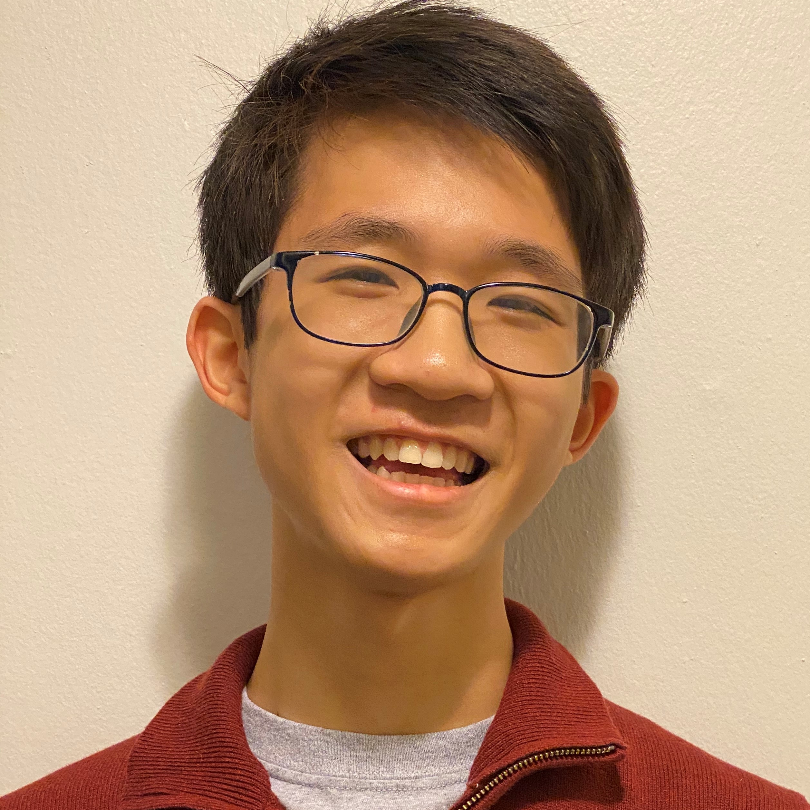
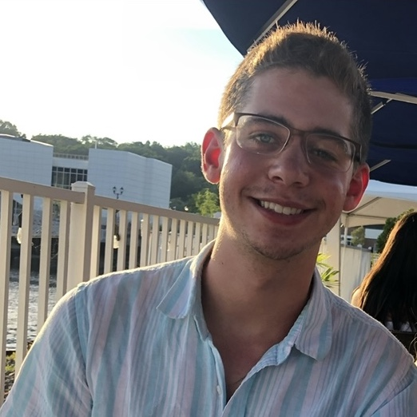

Meet our Exec Board
-

Yanni Wilcox Co-President
AutoAquaponics Electronic Subteam Lead -

Fay-Ling Laures Co-President
SmartTree Project Manager -

Thomas Hoang SmartTree Project Manager -
 Lester Tai AutoAquaponics Project Manager
Webmaster -

Marcos Sanchez AutoAquaponics Project Manager -

Ellie Lind Green Wall Project Manager -

Cameron Moore Green Wall Project Manager -

Lynna Deng Secretary
Green Wall -
 Ryan Kessler Public Relations Chair
SmartTree -

Hannah Wilks Public Relations Chair
AutoAquaponics -
![Spencer Huie is a junior majoring in Industrial Engineering and Data Science. Through ESW, he seeks to use his interests in engineering and business to promote sustainability. He currently works as ESW's Finance Chair, ensuring that project teams have the necessary funding and materials; he is also a member of AutoAquaponics, and works on the plumbing system.LINKEDINLINKhttps://www.linkedin.com/in/spencer-huie-8a28461b7?lipi=urn%3Ali%3Apage%3Ad_flagship3_profile_view_base_contact_details%3BMER1MgaiQgunMX6HE%2F9cAQ%3D%3D](../images/exec/Spencer_Huie_Headshot.jpg)
Spencer Huie Finance Chair
AutoAquaponics -

Miya Liu Webmaster
AutoAquaponics
×